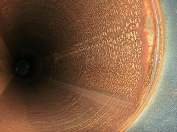
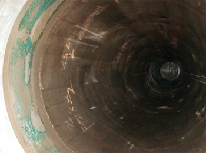

НОТЕХ-К
Химический преобразователь ржавчины
ПОДГОТАВЛИВАЕТ РЖАВУЮ ПОВЕРХНОСТЬ ПОД ОКРАСКУ
НЕ ТРЕБУЕТ ПРОМЫВАНИЯ ОБРАБОТАННОЙ ПОВЕРХНОСТИ ВОДОЙ
СОДЕРЖИТ ИНГИБИТОР КОРРОЗИИ
ВЫПУСКАЕТСЯ В ВИДЕ КОНЦЕНТРАТА
- Применяется для поверхностей со старым разрушенным покрытием;
- Исключает возникновение вторичной коррозии;
- Увеличивает долговечность лакокрасочного покрытия;
- Значительно эффективнее любых грунтовок со свойствами преобразования ржавчины;
- Обработка арматуры и закладных деталей в железобетоне;
- Обработанная ХПР «НОТЕХ-К» окалина снимается легче;
- Обработанные сварные швы не ржавеют;
- При разбавлении водой в 6-7 раз может применяться при гидропексоструйных работах;
- Не горюч, прост в эксплуатации;
- Совместим с большинством лакокрасочных материалов (включая порошковые)
|
"НОТЕХ-К" |
Химический преобразователь ржавчины |
|
НАЗНАЧЕНИЕ, ОСОБЕННОСТИ |
Химический преобразователь ржавчины (ХПР) «НОТЕХ» представляет собой высокотехнологичный, многофункциональный продукт – буферную смесь фосфатов и фосфорной кислоты. Единственный, не имеющий аналогов преобразователь ржавчины, сочетающий процесс «холодного» фосфатирования с пассивацией за счет высокоэффективного ингибитора атмосферной коррозии анодного типа, многократно усиливающего защитные свойства слоя инертных фосфатов железа и цинка, образующихся при фосфатировании обычными преобразователями ржавчины. Применяется для химической очистки и обработки металлических поверхностей и сварных швов перед нанесением покрытий, самостоятельно или в комбинациях с другими методами очистки. Не требует смывания водой и увеличивает долговечность лакокрасочного покрытия в 1,5-2 раза. Выпускается в виде: НОТЕХ-К (концентрат) и НОТЕХ (рабочий раствор). В зависимости от решаемой технологической задачи может изменяться степень разведения водой концентрата, соответственно его цена. Если Вы доверяете нашему опыту, то по желанию потребителя поставщиком может быть отгружен готовый состав «НОТЕХ» следующих марок: · НОТЕХ-К (модификатор) – для самостоятельной химической подготовки фосфатированием ржавых металлических поверхностей, а также сварных швов под окраску при строительстве и ремонте в сочетании с механической или абразивоструйной очисткой. · НОТЕХ-К (арматурный) – для обработки арматуры и других закладных деталей перед твердением бетонного раствора. · НОТЕХ-К (пассиватор) – для защиты от «вторичной» коррозии при окраске крупногабаритных конструкций с нанесением на очищенную абразивом поверхность на период до покраски. · НОТЕХ – специальный – для очистки внутренних поверхностей оборудования и трубопроводов от ржавчины и окалины с последующей сушкой без дополнительной пассивации. |
|
ТЕХНИЧЕСКИЕ ХАРАКТЕРИСТИКИ |
Внешний вид – жидкость |
Одним из лучших способов подготовки металлических поверхностей под лакокрасочные и другие покрытия является их фосфатирование с пассивацией. Особым интересом в промышленных условиях пользуется холодное фосфатирование, не требующее применения повышенных температур и ванн, однако эффективное лишь на поверхностях, предварительно подготовленных другими способами.
Когда необходимо подготовить металлическую поверхность к окраске, но применение пескоструйной или дробеструйной очистки экономически нецелесообразно либо практически невозможно, то используют преобразователи ржавчины. Эти средства могут применяться в комплексе с последующим покрытием поверхности лакокрасочными материалами. Они имеют высокую адгезию с преобразованным слоем ржавчины, связывают остатки кислоты и устойчивы к воздействию кислот.
Химический преобразователь ржавчины «НОТЕХ» позволяет проводить процесс фосфатирования непосредственно по ржавой поверхности. Область применения преобразователя «НОТЕХ» – судостроительные, машиностроительные, металлургические, предприятия энергетического и нефтяного комплекса, строительные и ремонтные организации и др.
Важно помнить, что при помощи преобразователя ржавчины невозможно провести обработку изделий с любой степенью коррозионного повреждения. Для оценки возможности использовать преобразователь руководствуются стандартом ИСО 8501-1. Согласно требованиям стандарта, металлическая поверхность, на которую будет наноситься преобразователь ржавчины, должна быть очищена от пластовой ржавчины, видимых следов смазок, остатков предыдущего лакокрасочного покрытия и грязи.
Состав «НОТЕХ» может быть использован при температурах от -5 до +30 °С, не требует последующего смыва водой, моющими составами, растворителями. Состав совместим с большинством известных типов лакокрасочных покрытий.
Химический преобразователь ржавчины «НОТЕХ-К» не требует промывания изделия перед окрашиванием, поскольку в его основе специальная химическая буферная смесь, обеспечивающая отсутствие остаточной кислотности. По сравнению с аналогами, преобразователь «НОТЕХ-К» демонстрирует низкий расход при нанесении (см. расчет стоимости материала «НОТЕХ-К»), за счет чего обеспечивает экономию при высоком качестве покрытия.
Высокую эффективность, которую показывает преобразователь ржавчины «НОТЕХ-К», подтверждает Межведомственная комиссия при ЦНИИ конструкционных материалов «Прометей» на основании глубоких и всесторонних исследований совместимости и влияния «НОТЕХ-К» на технологические параметры лакокрасочного покрытия. По рекомендации этой комиссии «НОТЕХ-К» широко применяется в судостроительной отрасли для защиты от коррозии труднодоступных конструкций судовых отсеков и надводного борта. В случае покраски металла без преобразователя требуется провести очень тщательную очистку абразивом до степени Sa2 ½, что очень сложно и дорого. При покраске с применением преобразователя ржавчины «НОТЕХ-К» допускается степень очистки St2, которая значительно менее затратна по сравнению с Sa2 ½. (стандарт ИСО 8501-1).
НОТЕХ-К (модификатор)
Модификатор ржавчичны «НОТЕХ-К» используется для химической подготовки металлических поверхностей и сварных швов под окраску. В сочетании с механической очисткой до степени St2, обработка составом «НОТЕХ-К» повышает уровень очистки до степени Sa2,5.
Применение модификатора «НОТЕХ-К» перед покраской ржавых металлических изделий увеличивает срок службы лакокрасочного покрытия в 1,5-2 раза.
Состав совместим с большинством известных типов лакокрасочных покрытий, создаёт микрорельеф на поверхности металла, обеспечивающий технологичное нанесение слоя ЛКМ и улучшающий его адгезию.
|
НОТЕХ-К (модификатор) |
|
|
НАЗНАЧЕНИЕ, ПРИНЦИП РАБОТЫ |
Марка НОТЕХ-К (модификатор). Предназначена для самостоятельной химической подготовки фосфатированием ржавых металлических поверхностей, а также сварных швов под окраску при строительстве и ремонте в сочетании с механической или абразивоструйной очисткой. Механическая очистка до степени St2 в сочетании с последующей обработкой «НОТЕХ» и локализацией коррозии в язвах и труднодоступных участках обеспечивает уровень подготовки, сопоставимый с абразивоструйной очисткой до степени Sa2,5. При обработке металлической поверхности производит ее холодное фосфатирование (без нагревания) и дополнительную пассивацию ингибитором анодного типа. В сложных случаях ремонта конструкции с пластами ржавчины для облегчения механической очистки рекомендуется предварительное смачивание поверхности концентрированным раствором «НОТЕХ-К». После абразива поверхность фосфатируют НОТЕХ-К (модификатор). Не имеет аналогов. |
|
ОСОБЕННОСТИ, ПРИМЕНЕНИЕ |
Основная марка, применяемая для решения большинства задач химической подготовки поверхности с продуктами коррозии без тщательной предварительной абразивоструйной очистки. Состав наносят любым способом 1-2 раза. Не требуется дополнительное промывание обработанной поверхности водой перед покраской. |
|
ТЕХНИЧЕСКИЕ ХАРАКТЕРИСТИКИ |
Водный сильнокислый раствор желтого цвета. Плотность – (1,05 ± 0,01) г/см3. Соответствует стандартному разведению концентрата «НОТЕХ-К» водой 1:2. |
|
НОТЕХ-К (пассиватор) |
|
|
НАЗНАЧЕНИЕ, ПРИНЦИП РАБОТЫ |
Марка НОТЕХ-К (пассиватор). Предназначен для защиты от «вторичной» коррозии при окраске крупногабаритных конструкций с нанесением на очищенную абразивом поверхность на период до покраски. Предназначен также для финишной обработки металлических поверхностей перед нанесением лакокрасочного или другого покрытия для эффективной химической локализации коррозии в язвах и труднодоступных участках конструкции, где очистка абразивом невозможна или малоэффективна (металлические ограждения дорог). Может добавляться в воду при использовании абразивоструйных методов с добавлением воды для снижения ее агрессивности. Рекомендуется для растворения плотно сцепленной окалины, что снижает трудозатраты при снятии окалины в 3 раза. |
|
ОСОБЕННОСТИ, ПРИМЕНЕНИЕ |
Состав наносят после выполнения всех видов абразивоструйной или механической очистки поверхности (сухой, мокрой, с добавлением воды). Состав наносят распылением в один слой. Единственный преобразователь ржавчины для предотвращения вторичной коррозии после очистки поверхности перед нанесением грунта. Водорастворимый ингибитор коррозии в составе совместим с большинством известных типов лакокрасочных материалов, поэтому исключается традиционная технологическая стадия расконсервации перед покраской. Позволяет варьировать в широких пределах временной промежуток между очисткой и покраской в самых неблагоприятных атмосферных условиях. Достигается идеальная совместимость средств временной и постоянной защиты от коррозии. Не имеет аналогов. |
|
ТЕХНИЧЕСКИЕ ХАРАКТЕРИСТИКИ |
Водный сильнокислый раствор желтого цвета. Плотность – (1,05 ± 0,01) г/см3. Соответствует стандартному разведению концентрата «НОТЕХ-К» водой 1:2. При применении в гидропескоструе разводить 1: 5-6 в зависимости от состояния поверхности. |
|
НОТЕХ-К (арматурный) |
|
|
НАЗНАЧЕНИЕ, ПРИНЦИП РАБОТЫ |
Высокотехнологичный ингибированный защитный состав для защиты от коррозии арматуры и других закладных деталей перед схватыванием и твердением бетонного раствора. Пассивирует сталь, а имеющиеся продукты коррозии преобразует в инертные фосфаты, тем самым полностью исключает процессы миграции продуктов коррозии к поверхности конструкции. Применяется как на ответственных строительных площадках с повышенными требованиями (взлётно-посадочные полосы аэродромов, железобетонные конструкции портовых, мостовых, гидротехнических и других ответственных сооружений, объекты культурного наследия и т.п.), так и любых других железобетонных конструкциях с перемещаемой опалубкой. |
|
ОСОБЕННОСТИ, ПРИМЕНЕНИЕ |
При нанесении на металлические закладные детали образуются "каменные" фосфаты железа и цинка, при взаимодействии с жидким бетонным раствором – фосфат кальция. Фосфаты усиливают сцепление арматуры с бетонным камнем и упрочняют железобетонную конструкцию. Обработку арматуры и закладных деталей производят в ваннах погружением пучков арматуры в раствор, однократным обмазыванием выпусков арматуры кистью перед заливкой бетонного раствора или распылением и т.п. |
|
ТЕХНИЧЕСКИЕ ХАРАКТЕРИСТИКИ |
Водный состав желтого цвета, соответствующий химическому преобразователю ржавчины «НОТЕХ-К» (концентрату). Плотность – (1,20 ± 0,02) г/см3, рН= 1,1 – 1,3. |
|
НОТЕХ – специальный |
|
|
НАЗНАЧЕНИЕ, ПРИНЦИП РАБОТЫ |
Марка «НОТЕХ - специальный». Бесцветный продукт, предназначен для очистки внутренних поверхностей оборудования и трубопроводов от ржавчины и окалины с последующей сушкой без дополнительной пассивации. Применяется в сложных системах или с повышенными экологическими требованиями, или с возможностью отравления катализаторов и т.п. (цеховая конвейерная линия с камерами химической подготовки и окраски). |
|
ОСОБЕННОСТИ, ПРИМЕНЕНИЕ |
Применяется в сложных системах, на объектах с повышенными экологическими требованиями, на установках органического синтеза с катализаторами для предотвращения их отравления и т.п. (цеховая конвейерная линия с камерами химической подготовки и окраски). |
|
ТЕХНИЧЕСКИЕ ХАРАКТЕРИСТИКИ |
Сильнокислый бесцветный водный раствор с плотностью (1,10 ± 0,02) г/см3. Соответствует кратности разведения водой «НОТЕХ-К» 1:1. Отработанный технологический раствор обезвреживается известковым молоком. |
Марка «НОТЕХ – специальный» – бесцветный продукт, предназначен для очистки внутренних поверхностей оборудования и трубопроводов от ржавчины и окалины с последующей сушкой без дополнительной пассивации. Применяется в сложных системах или с повышенными экологическими требованиями, или с возможностью отравления катализаторов и т.п. (цеховая конвейерная линия с камерами химической подготовки и окраски).
Примеры использования «НОТЕХ – специальный»
Наша технология успешно применялась при отмывках газокомпрессорного оборудования концерна ENI (Италия) на станции «Береговая» проекта «Голубой поток»:
|  |  |
|
Внутренняя поверхность трубы до очистки. |
Внутренняя поверхность трубы после очистки составом «НОТЕХ – специальный». |
ООО «Ставролен», новая линия производства полипропилена по лицензионному проекту UNIPOL (США). При запуске линии потребовалось срочно провести предпусковую очистку изнутри от грязи и пластовой ржавчины свыше 30км трубопроводных систем разного диаметра, на разной высоте, с многочисленными включениями технологического оборудования. Использованы наши материалы «О-БИС-М» и «НОТЕХ». Технология не имеет аналогов, растворение продуктов коррозии производилось без подогрева с одновременной пассивацией без дополнительных отмывок водой:
Станислав Дросик,
Директор ООО «АнКорИнжиниринг»